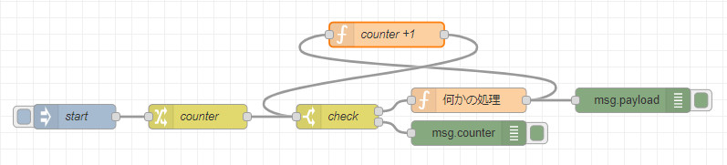
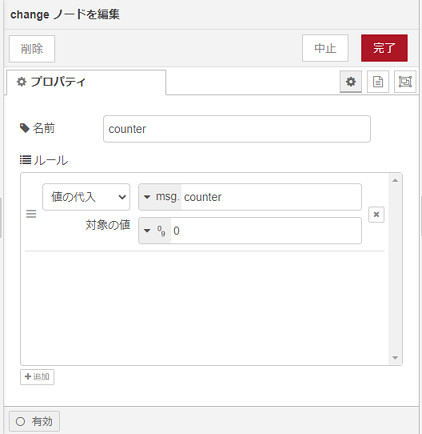
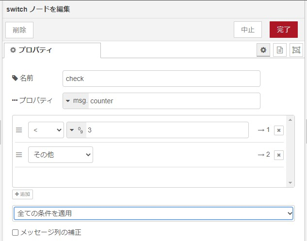
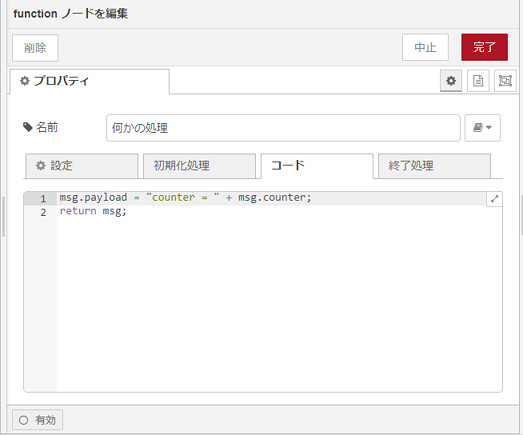
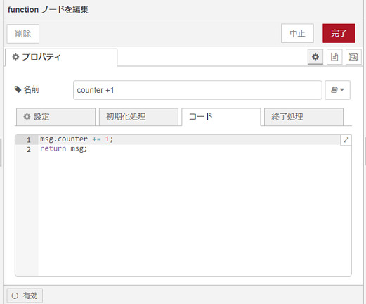
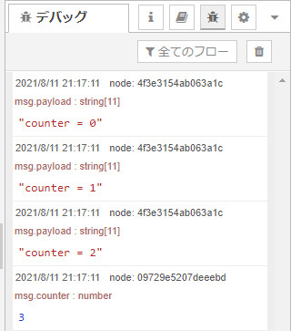

Node-REDにループ処理を行うための専用ノードはありません。
「Function」ノード内で以下のように書くことができます。
for (let counter = 0; counter < 3; counter ++) {
処理
}しかし、「Function」ノードを多用すると、せっかくのフローベースドプログラミングのメリットがなくなる恐れがあります。（ブラックボックス化する、データの流れが見えなくなる）
ループ処理の書き方
以下はノードによるループ処理の書き方の例です。

それぞれ説明します。
まず、「change」ノードでカウンター（msg.counter）を初期化します。

次に、「switch」ノードでカウンターをチェックします。3未満なら処理を続け、3以上ならカウンターを表示して終わります。

「何かの処理」は、「counter = *」を表示するという処理です。

処理が終わったら、カウンターにプラス1します。

「start」を押した時の、デバッグメッセージは以下の通りです。

以下はフローをJSON形式で書き出したものです。以下をコピーして、Node-REDの右上の マークをクリックし、 「読み込み」で開いたテキストボックスにペーストしてください。上のフローを読み込むことができます。
[
{
"id": "629d3d20c02b0cda",
"type": "inject",
"z": "bb7b8c6ec3ed013a",
"name": "start",
"props": [
{
"p": "payload"
},
{
"p": "topic",
"vt": "str"
}
],
"repeat": "",
"crontab": "",
"once": false,
"onceDelay": 0.1,
"topic": "",
"payloadType": "date",
"x": 90,
"y": 160,
"wires": [
[
"d33a23c311dd6331"
]
]
},
{
"id": "d33a23c311dd6331",
"type": "change",
"z": "bb7b8c6ec3ed013a",
"name": "counter",
"rules": [
{
"t": "set",
"p": "counter",
"pt": "msg",
"to": "0",
"tot": "num"
}
],
"action": "",
"property": "",
"from": "",
"to": "",
"reg": false,
"x": 240,
"y": 160,
"wires": [
[
"58bb07811c2eddc2"
]
]
},
{
"id": "58bb07811c2eddc2",
"type": "switch",
"z": "bb7b8c6ec3ed013a",
"name": "check",
"property": "counter",
"propertyType": "msg",
"rules": [
{
"t": "lt",
"v": "3",
"vt": "num"
},
{
"t": "else"
}
],
"checkall": "true",
"repair": false,
"outputs": 2,
"x": 410,
"y": 160,
"wires": [
[
"0418844e6da02175"
],
[
"09729e5207deeebd"
]
]
},
{
"id": "09729e5207deeebd",
"type": "debug",
"z": "bb7b8c6ec3ed013a",
"name": "",
"active": true,
"tosidebar": true,
"console": false,
"tostatus": false,
"complete": "counter",
"targetType": "msg",
"statusVal": "",
"statusType": "auto",
"x": 570,
"y": 180,
"wires": []
},
{
"id": "537702f36a48b8d4",
"type": "function",
"z": "bb7b8c6ec3ed013a",
"name": "counter +1",
"func": "msg.counter += 1;\nreturn msg;",
"outputs": 1,
"noerr": 0,
"initialize": "",
"finalize": "",
"libs": [],
"x": 470,
"y": 60,
"wires": [
[
"58bb07811c2eddc2"
]
],
"info": "// nrlint no-loops:off\n"
},
{
"id": "0418844e6da02175",
"type": "function",
"z": "bb7b8c6ec3ed013a",
"name": "何かの処理",
"func": "msg.payload = \"counter = \" + msg.counter;\nreturn msg;",
"outputs": 1,
"noerr": 0,
"initialize": "",
"finalize": "",
"libs": [],
"x": 570,
"y": 140,
"wires": [
[
"537702f36a48b8d4",
"4f3e3154ab063a1c"
]
]
},
{
"id": "4f3e3154ab063a1c",
"type": "debug",
"z": "bb7b8c6ec3ed013a",
"name": "",
"active": true,
"tosidebar": true,
"console": false,
"tostatus": false,
"complete": "payload",
"targetType": "msg",
"statusVal": "",
"statusType": "auto",
"x": 770,
"y": 140,
"wires": []
}
]